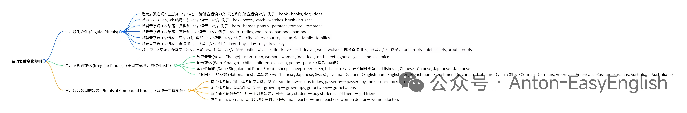
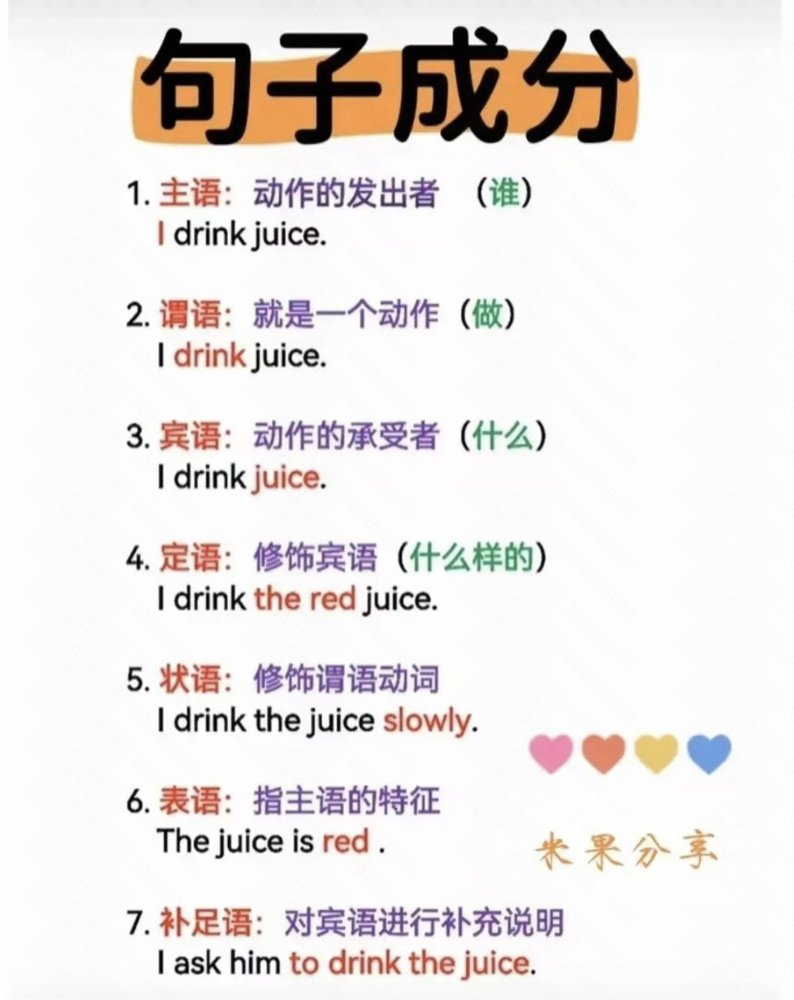
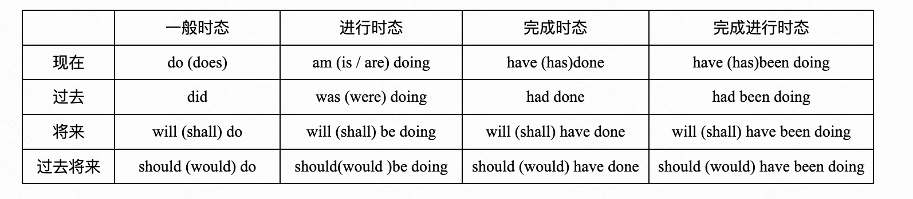
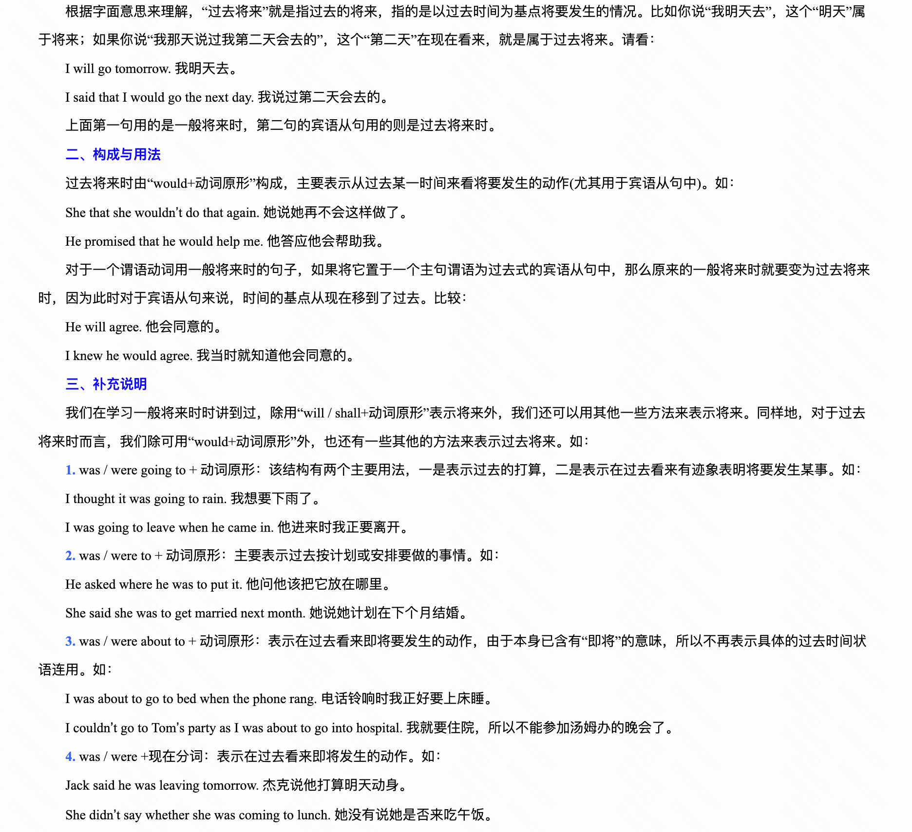

概述
- 本篇总结英语相关知识
一 语法

（一） 各种词性
1 副词
- 用于描述某事物发生的时间、方式、地点或在甚么情况下发生的词；例如 quickly 迅速地、now 现在。有程度、方式、地点、时间、持续和频率副词等好几类
- 怎么用: 修身动词、形容词、修饰其他副词、修饰整个句子
- 例子
-
- 修饰动词: He walks slowly.(slowly修饰动词, 是副词)
-
- 修饰形容词: The cake is very sweet. (very修饰形容词sweet, 是副词)
-
- 修饰其他副词: Jim can run very fast. (very修饰副词fast, 是副词)
-
- 修饰其他副词: You speak English quite well. (quite修饰副词well)
-
- 修饰整个句子: Finally, we finished the work on time. 最后,我们按时完成了工作. (Finally是副词，修饰整个句子)
2 名词
- 单数变成复数规则总结
- 
3 介词
-
At can be used to talk about a single specific location. I'm at work. Or: I'm at the BBC right now.
-
On is used in relation to a surface. I'm sitting on a chair.
-
And in is used to talk about a three-dimensional space, usually with four walls. It's similar to 'inside'. I'm in a room.
-
So to help you remember these rules, try to think of a concert:
-
I'm at the front. The band is on the stage. And my friends are in the crowd.
In
- in my opinion
- in my time zone
At
- 表示确切的地点或者时间
- at dawn
- at dusk
- at midnight
- I am living at New York
On
- 表示在物体表面
For
- 最核心的含义是表现向前一步.
There's a letter for you. 有你一封信。
It's a book for children. 这是本儿童读物。
She's working for IBM. 她在IBM公司工作。
Of
-
最核心的含义是表示从属关系, a map of china, a bottle of water
-
表示: ...的
1 属于（某人）；关于（某人）
belonging to sb; relating to sb
a friend of mine 我的一个朋友
Can't you throw out that old bike of Tommy's? 难道你就不能把汤米那辆旧自行车给扔掉？
the paintings of Monet 莫奈的画作
【帮助说明】When you are talking about everything someone has painted, written, etc. use of . When you are referring to one or more examples of somebody's work, use by :
a painting by Monet
指某人所画或所著等的全部作品时，用of；指其作品中的一部或多部时，则用by：a painting by Monet
2 属于（某物）；（某事）部分的；关于（某物）
belonging to sth; being part of sth; relating to sth
the lid of the box 盒子盖
the director of the company 公司的董事
a member of the team 一名队员
the result of the debate 辩论的结果
3 出身于（某背景）；住在（某地）
coming from a particular background or living in a place
a woman of Italian descent 意大利裔女子
the people of Wales 威尔士人民
4 关于，反映（某人或某事）
concerning or showing sb/sth
a story of passion 爱情故事
a photo of my dog 我那只狗的照片
a map of India 印度地图
5 （用于表示性质、组成或涵盖）即，由…组成
used to say what sb/sth is, consists of, or contains
the city of Dublin 都柏林市
the issue of housing 住房问题
a crowd of people 一群人
a glass of milk 一杯牛奶
6 （用于表示计量、时间或年龄等）
used with measurements and expressions of time, age, etc.
2 kilos of potatoes 两公斤马铃薯
an increase of 2% 2%的增长
a girl of 12 12岁的女孩
the fourth of July 七月四日
the year of his birth 他出生的那一年
(old-fashioned)We would often have a walk of an evening. 我们过去常在晚上散步。
7 （常用在some、a few等词语之后，表示人或物的所属）属于…的
used to show sb/sth belongs to a group, often after some , a few , etc.
some of his friends 他的几位朋友
a few of the problems 其中的几个问题
the most famous of all the stars 最知名的一位明星
8 （表示人或事的时空位置）在，当
used to show the position of sth/sb in space or time
just north of Detroit 就在底特律以北
at the time of the revolution 在革命的年代
(北美英语)at a quarter of eleven tonight (= 10.45 p.m.) 在今晚十一点差一刻
9 （用于由动词转化的名词之后，of之后的名词可以是受动者，也可以是施动者）
used after nouns formed from verbs. The noun after ‘of’ can be either the object or the subject of the action.
the arrival of the police (= they arrive) 警察的到来
criticism of the police (= they are criticized) 对警察的批评
fear of the dark 对黑暗的惧怕
the howling of the wind 狂风的呼啸
10 （用于某些动词后，后接动作所涉及的人或事）
used after some verbs before mentioning sb/sth involved in the action
to deprive sb of sth 剥夺某人的东西
He was cleared of all blame. 他所受的一切责难都澄清了。
Think of a number, any number. 想一个数字，随便一个。
11 （用于某些形容词后，后接与感情相关的人或事）因为，由于
used after some adjectives before mentioning sb/sth that a feeling relates to
to be proud of sth 为某事自豪
12 （用于对某人的行为发表看法）
used to give your opinion of sb's behaviour
It was kind of you to offer. 感谢你的好意。
13 （用于一个名词修饰另一个名词时）
used when one noun describes a second one
Where's that idiot of a boy (= the boy that you think is stupid) ? 那个傻小子在哪儿？
14 固定搭配
of用于 because of,instead of, in spite of 等短语介词和 make of, dispose of 等短语动词中
4 冠词
- 冠词分为定冠词、不定冠词、零冠词 3种情况
- 冠词是一个形容词（限定词），出现在名词之前并修饰名词。 冠词用于表示名词是特指还是泛指。
-
- 冠词是英语中常见的限定词，它们能帮助我们判断名词的所指，即某个名词是特指还是泛指。例如，当我们说“I love candles”（我喜欢蜡烛）时，没有冠词则说明我们不知道名词的所指对象——这里讲的是通俗意义上的蜡烛，而不是某一特定的蜡烛。然而，当我们说“I love the candle”（我很喜欢那支蜡烛）时，我们指的是一支具体的、单独的蜡烛，且听者知道你说的是哪根蜡烛。
定冠词 the
何时使用“the” ？ 有3种情况
- 1 当名词显而易见时
- 2 当名词是常识时
- 3 当名词已被提到过
-
- 定冠词可以帮助我们避免重复。这种情况下，定冠词可以指代在前文中已向听者介绍过的某些名词。
不定冠词 a 和 an
- 不定冠词用于泛指名词的一般类别。当你并非特指某一具体事物（即名称的确切版本），而是想泛指该名词的任意版本时，就需要使用不定冠词。不定冠词只用于单数、可数名词。
何时使用“a” ?
- 1 当名词具体身份不明确时
- 2 当第一次提及某事物时
- 3 当提及某人的职业时
- 4 何时使用“an” ?
-
- "an"与“a”的用法完全相同，不同之处在于，它用在以元音开头的名词前
零冠词的场景
- 1 有代词的场景
-
- 比如Has anyone seen my book?
-
2 表示语言的名词
-
- 比如He speaks French
-
3 表示学科的名词
-
- 比如Pepe isn’t very good at math.
-
4 表示体育运动的名词
-
- 比如My favorite sport is fencing. - 我最喜欢的运动是击剑。
（二） 句法
- She bought a new book. (
She是主语) - She bought a new book. (
bought是谓语) - She bought a new book. (
book是宾语还是a new book是宾语？) - The red car runs fast. 红书那辆车跑起来很快. (
red,红色的， 是定语) - We should keep our room clean and tidy. (
clean and tidy是补语) - She teaches english patiently. (
patiently是状语) - I am happy. (
happy是表语)，主+系+表结构 - My Friend, Marry, is comming. 我的朋友, 玛丽, 很快就要来了. (
Marry是同位语)

- 1 主语： 动作的发出者(谁)
I drink juice. (I 是主语)
- 2 谓语：就是一个动作. (做)
I drink juice. (drink 是谓语)
- 3 宾语: 动作的承受者. (什么)
I drink juice. (juice 是宾语)
- 4 定语: 修饰、限定或描述 宾语
I drink the red juice. (the red 是定语)
- 5 状语: 修饰谓语动词
I drink juice slowly. 我慢慢地喝果汁. (slowly, 慢慢地， 是状语。)
I couldn’t feel anger against him. against him 是状语，用来修饰谓语动词.
- 6 表语： 表示主语的特征
The juice is red. (red是表语)
I am happy. (happy是表语)， 主+系+表结构
- 7 补语: 对宾语进行补足说明.
I ask him to drink the juice. 我让他去喝果汁. (to drink the juice是补语)
-
补语（Complement）：句子的 “必要补充”
-
- 定义：用来补充说明主语或宾语的状态、身份或特征的成分。
-
- 分类：
主语补语（表语）：跟在系动词后说明主语
She is a teacher.
宾语补语：跟在宾语后说明宾语
We elected her leader.
-
- 特点：
补语缺失会导致句子不完整❌
补语可以是名词、形容词、分词或介词短语。
主语补语（表语）：跟在系动词后，说明主语的状态或身份。
She is a teacher.（她是一名老师。）
a teacher 补充说明主语 she 的身份。
He became famous.（他很有名。）
famous是主语补语，说明主语He的状态。
宾语补语：跟在宾语后，说明宾语的状态或特征。
最常见的是宾语补足语。名词、形容词、副词、不定式、现在分词、过去分词都可以在句子中作宾补。
They elected him president.（他们选他当总统。）
（president 补充说明宾语 him的身份。）
She is afraid of dogs.（她害怕狗）
（of dogs是形容词补语，补充说明afraid的对象。）
We found everything in the classroom in good order. （我们发现教室的所有事物都井然有序。）
( in good order是介词短语补语，补充说明everything in the classroom的情况 ）
主语补语（表语）：跟在系动词后，说明主语的状态或身份。
She is a teacher.（她是一名老师。）
a teacher 补充说明主语 she 的身份。
He became famous.（他很有名。）
famous是主语补语，说明主语He的状态。
宾语补语：跟在宾语后，说明宾语的状态或特征。
最常见的是宾语补足语。名词、形容词、副词、不定式、现在分词、过去分词都可以在句子中作宾补。
They elected him president.（他们选他当总统。）
（president 补充说明宾语 him的身份。）
She is afraid of dogs.（她害怕狗）
（of dogs是形容词补语，补充说明afraid的对象。）
We found everything in the classroom in good order. （我们发现教室的所有事物都井然有序。）
( in good order是介词短语补语，补充说明everything in the classroom的情况 ）
同位语 vs 补语：如何区分？
功能不同：
同位语是对名词的进一步解释，属于“额外信息”。
补语是对主语或宾语的补充说明，属于“必要信息”。
结构不同：
同位语通常用逗号隔开，可以省略。
补语没有逗号，且不能省略。
对比一下：
同位语：
My brother, a doctor, lives in New York.
（我的哥哥，一名医生，住在纽约。）
"a doctor" 是对 "my brother" 的补充说明，可以省略。
补语：
She considers her brother a genius.
（她认为她的哥哥是个天才。）
"a genius" 是宾语补语，不能省略。
-
8 同位语
-
同位语（Appositive）：名词的“平行解释”
-
- 定义：用来对前面的名词进行进一步解释或说明的词语或短语。
-
- 结构：名词/名词短语，直接放在被修饰词后，可省略而不影响句子完整性。
-
- 特点：它和被修饰的名词是“同位关系”，可以互换位置。
-
My best friend, a talented artist, just opened her own gallery.
（我最好的朋友，一位才华横溢的艺术家，刚刚开了自己的画廊。）
这里的 "a talented artist" 是对 "my best friend" 的补充说明。
- Paris, the capital of France, is known for its beautiful architecture.
（巴黎，法国的首都，以其美丽的建筑闻名。）
"the capital of France" 进一步解释了 "Paris"。
在以上两个句子中，如果删掉 “a talented artist”，和 “the capital of France”，并不会影响句子的完整性。
My best friend just opened her own gallery.
我最好的朋友刚刚开了自己的画廊。
Paris is known for its beautiful architecture.
巴黎以其美丽的建筑而闻名。
大家看，是不是不会影响句子完整性呢？
所以，没有同位语的句子语法结构完全没有问题！
-
modal verb情态动词
-
adverbial状语
-
subject主语
-
object宾语
-
predicate谓语
-
attributive定语
-
apposition同位语
-
imperative祈使句
-
predicative表语
-
complement补足语
-
exclamation感叹句
-
subjunctive mood虚拟语气
-
adverbial clause of concession让步状语从句
（三） 长句、难句
3.2 分析句子成分的好处
- 英语的逻辑性主要体现在句子成分上.
3.2.1 通过划分句子成分, 能更好理解长句和难句.
- 长句和难句说白了也就是那几种结构:
主+谓+宾、主+系+表等简单句+一堆修饰语组成.
3.2.2 更好的做填空题
I don't know 空格 he will come tomorrow. 这里 可以填if 或 whether
You should do what you can 空格 you english.
A imporove B to improve.
3.2.3 阅读理解中要把长难句缩减，获取关键信息, 提高阅读速度和理解的准确性.
3.2.3 在写作方面, 弄清楚句子结构, 能够写出结构正确、没有语法的句子.
3.2.3 在英语口语表达当中, 如果我们能熟练的分析句子的成分, 在组织语言的时候会更加流畅.
（四） 语法
4.1 语法
4.1.1 如何区分宾语补足语和定语
- 答：
-
- 1、定语是修饰名词的句子成分，名词不一定是宾语， 也可能是主语、 表语。
-
- 2、宾语补足语是补充说明宾语的，句子成分与宾语有关系
-
- 3、判断宾补的依据，就是看后面的成分与宾语的关系。有主表关系或主谓关系的就是宾补。否则，就不是宾补。
（宾语补足语：如果该成分去掉，句子通常是不完整且意思完全改变。
定语：如果改成分去掉，句子原意依旧不变且通常完整。）
4.1.2 如何区分宾语补足语和双宾语
- 答：双宾语就是有两个明确的宾语，而宾语补足语简称宾补，是用来补充说明宾语的性质的。
（宾语补足语：宾语和补语之间加一个系动词，可以构成语义通顺的句子。
双宾语：两个宾语可调换位置）
双宾语的核心是一个动词能同时关联两个人或物。
记住一个简单的公式：某人 为/给 某人 做了某事。
间接宾语（人）和直接宾语（物）的位置通常是间接宾语在前，直接宾语在后。
| 句子 | 主语 | 谓语 | 间接宾语 (人) | 直接宾语 (物) |
|---|---|---|---|---|
| My father bought me a computer. | My father | bought | me | a computer |
| He told us a story. | He | told | us | a story |
| Can you pass me the salt? | You | pass | me | the salt |
4.1.3 如何区分同位语和宾语补足语
-
答：同位语与宾语补足语的区别是词性不同、是否可以去掉、作用不同。
-
- 1、词性不同：宾语补足语补充说明宾语，同位语可以是主语，也可以是宾语的同位语。
-
- 2、是否可以去掉：宾语补足语如果去掉，句子意思不完整；同位语去掉，并不影响句子的完整。
4.1.4 如何区分定语和同位语
- 答：
-
- 同位语意思是与前一词指代同一事物，而定语是用来形容名词的。同位语可以去掉但不影响句子的理解，而定语去掉之后则会使句子意思不明确。同位语是用来对名词或代词作进一步的解释，它可以是单词、短语或从句。
-
- 定语用来限定、修饰名词或代词的。充当定语的有：形容词、代词、名词、分词、介词短语或副词和从句。
-
- 两者都是修饰名词，定语前要加关系代词或副词，同位语是对名词的解释说明。
（同位语：可以去掉，且不影响句子的理解。
定语：不能去掉，否则会使句意不明。）
4.2 语法概要
- 主、动、宾 + 方地时
- 主、动、宾 就是
谁是啥?或者谁干啥? - 方地时 就是
方式、地点、时间
（五） 状语
1 状语的种类（按内容/功能分类）
这是最实用的分类方式，主要看状语在句子中起什么作用。
- 时间状语：回答 “When?”（何时？）
She will call you tomorrow.
I was reading when he arrived.
- 地点状语：回答 “Where?”（何地？）
They met at the café.
He looked everywhere for his keys.
- 方式状语：回答 “How?”（怎样？）
She spoke softly and clearly.
He solved the problem with great creativity.
- 原因状语：回答 “Why?”（为何？）
He left because of the rain.
Being tired, she went to bed early.
- 目的状语：回答 “What for?”（为了什么？）
She studies hard to get into a good university.
He saved money in order to buy a car.
- 条件状语：回答 “Under what condition?”（在什么条件下？）
If it rains, the match will be canceled.
You can succeed only if you try.
- 让步状语：表示 “尽管…”（虽然有某种情况，但主句依然成立）
Although it was cold, she went out without a coat.
He finished the race, despite his injury.
- 程度/结果状语：回答 “To what extent?”（到什么程度？）或表示结果。
The movie was extremely boring. (程度)
He was so tired that he fell asleep instantly. (结果)
- 频率状语：回答 “How often?”（多频繁？）
I always have coffee in the morning.
They meet twice a week.
- 伴随状语：描述与主句动作同时发生的情况。
He sat by the window, thinking deeply.
She entered the room, followed by her assistant.
2 状语的构成形式（按词性/结构分类）
状语可以由多种语法单位充当：
- 1 副词：最典型的形式。
He runs quickly. (方式)
She will arrive soon. (时间)
- 2 介词短语：非常常见。
They talked in a low voice. (方式)
We’ll have a picnic by the lake. (地点)
- 3 非谓语动词短语：
不定式短语 (多表目的): He woke up early to catch the train.
现在分词短语 (多表伴随、原因): Hearing the news, she jumped with joy.
过去分词短语: Frightened by the noise, the child started crying.
- 4 名词短语：
I’ll see you next week. (时间)
He walked a long way. (距离/程度)
- 5 从句（状语从句）：
When the bell rings, class is over. (时间状语从句)
Because he was ill, he didn’t come. (原因状语从句)
He talks as if he knew everything. (方式状语从句)
3 如何正确识别状语？（三步识别法）
识别状语的关键在于功能和位置。
第一步：看功能（问问题）
对句子的核心“主谓宾”部分进行提问。
他昨天 离开了。 -> 他何时离开的？ -> 昨天 (时间状语)
她在公园里慢慢地散步。 -> 她在何处散步？ -> 在公园里 (地点状语)。她怎样散步？ -> 慢慢地 (方式状语)。
第二步：看位置（非常灵活）
- 句首：为了强调或衔接上下文。
In the morning, I usually exercise.
- 句中：常位于助动词/情态动词之后，主要动词之前。
I have already finished the work.
She is often late.
- 句末：最常见的位置。如果有多个状语，顺序常为：方式→地点→时间。
She sang beautifully at the concert last night. (方式→地点→时间)
第三步：看“可删除性”
状语是修饰语，而非句子主干。大多数情况下，去掉状语，句子在语法上依然完整，只是信息变得不具体。
原句: He drives his car carefully on the highway.
去掉状语: He drives his car. (核心意思“他开车”依然成立)
四、一个综合例句分析
Fortunately, he completed the project successfully at home yesterday because his team helped him.
Fortunately (句首)：评论性状语，表示说话者对全句的态度。
successfully (动词后)：方式状语，回答“How did he complete it?”。
at home (地点前)：地点状语，回答“Where?”。
yesterday (时间最后)：时间状语，回答“When?”。
because his team helped him (句末)：原因状语从句，回答“Why?”。
识别要点：
核心主干是：He completed the project.
其他部分都是对这个主干进行修饰、补充，回答不同问题，因此都是状语。
总结：
识别状语，牢记“提问法”和“可删除性”。先找到句子的主干（谁做了什么），然后看其他部分是在回答何时、何地、如何、为何等哪个问题，回答这些问题的成分就是状语。通过大量的阅读和练习，识别状语会变得非常自然。
二 英语练习
- 听、说、读、写
说 如何speak fluently
Step 1 lisen to English every day
1 每天听英语
Step 2 speak every day
2 每天说英语。即使自言自语
Step 3 don't be afraid of mistakes
3 不要害怕犯错
Step 4 learn and use small sentences
4 学习和使用小句子
Step 5 copy and repeat after native speakrs
5 在母语人士之后复制和重复
Step 6 think in English
6 按英语的方式思考。而不是转化成中文后再思考
- 英语是海洋捕猎文明，中文是农耕文明。农耕文明和海洋捕猎文明有非常大的差异
- 农耕文明讲究按时间顺序、一年四季。因此中文语法完全是时间驱动.
- 英语语法核心就是强调结果，
谁干什么. 不是时间驱动. 它强调重点先行，后面什么时间、什么地点、什么限定条件都可以加在后面. - 比如我和Jim一起教英语: 重点是
谁干什么--->我教英语--> I taguht English with Jim. - 另外西方海洋文明强调个人大于集体， 比如先名后姓。农耕文明强调集体大于个人，因此姓在名前面.
- 西方文明里有很多个人英雄，东方文明里都是集体英雄： 水浒108将、葫芦娃7兄弟。 姓在名前面也是代表先用家族、后有你.
- 西方文明注重效率，重点先行。 东方文明是追求过程、按时间慢慢来、最后得出结论。这是东方文明
今天放学后 你留下来 我要跟你聊聊 聊聊你最近关于英语学习的效率问题
中国人先铺垫什么时间、什么地点、然后我跟你聊、聊什么、关于英语学习的效率问题
老外不是这样思维，老外思维就是谁干啥, 重点先行, 铺垫在后 , 铺垫无非就是时间、地点等限定条件.
I need to talk to you about your efficiency of learning English after school.
比如最近咱们边上开了一家新饭馆、老排队、特别好吃，我请你吃. ---> 这是中国人的思维和表达方式，先铺垫后重点.
老外就先说重点, 重点是我请你吃饭: I take you to that resturant which is really busy.
- 语法不是一个人说出来的，是这个人的思维决定的，是他背后的文化基因决定的.
- 比如说你是一个好学生, 中国人把他变成疑问句之后，会把
吗放在最后, 变成你是一个好学生吗? - 但是英国人不这样, 他认为是不是是重点，疑问部分是重点, 因此按照重点在前、效率先行原则，就变成: Are you a good student？
- 中国人内在是严格按照时间顺序、时间驱动、按部就班，所以把疑问部分放在最后. 英国人是重点在前、效率先行
- 其他也是这样, 中国人说
你是谁？英国人说Who are you?, 中国人说你叫什么名字?, 英国人认为名字是重点，因此变成What is your name?
Step 7 talk with others or record yourself
7 与他人交谈或者记录自己的演讲
Step 8 stay positive and keep practicing
8 保持积极，继续练习
英语发音
- 分为三部分: 重读音节、非重读音节、辅音音节
- 重读音节 比较好理解，就是我们读一个单词的时候通常分几个部分，重读音节部分就要读重一点
1 音标 标准 发音
e
三 参考
四 实战
- 和外国人主动交流
- 和AI每天交流
六 时态
| 时态和动作状态 | 一般 | 进行中 | 完成 | 完成进行 |
|---|---|---|---|---|
| 现在 | 一般现在时 I play football every staturday. |
现在进行时 I am writing my homework. |
现在完成时 I have teached in that school for twenty years. |
现在完成进行时 |
| 未来 | 一般未来时 | 未来进行时 | 未来完成时 | 未来完成进行时 |
| 过去 | 一般过去时 | 过去进行时 | 过去完成时 | 过去完成进行时 |
| 过去将来 | 一般过去将来时 | 过去将来进行时 | 过去将来完成时 | 过去将来完成进行时 |
- 
1 一般现在时 （简单式）
- 最最常用
（do/does; is/am/are）
① 表示现在的情况、状态或特征。
例：He is a student.
他是一个学生。
② 表示经常性、习惯性动作。
例：He always helps others.
他总是帮助别人。
③ 客观事实和普遍真理。
例：The earth moves the sun.
地球绕着太阳转。
④ 表示一个按规定、计划或安排要发生的动作。
仅限于某些表示“来、去、动 、停、开始、结束、继续”等的动词，可以与表示未来时间的状语搭配使用 。
常见的用法是：飞机、火车、轮船、汽车等定期定点运行的交通方式。
例：The next train leaves at 3 o'clock this afternoon.
下一趟火车今天下午3点开车。
⑤ 在时间、条件和让步状语从句中经常用一般现在（有时也用现在完成时）表示将的来事情。（即：主将从现原则）
例：I will call you as soon as I arrive at the airport.
我一到机场就会给你打电话
2 现在进行时 （进行式）
- 最最常用之一
(am/is/are doing)
① 表示此时此刻正在发生的事情。
例：He is listning to the music now.
他现在正在听音乐。
② 表示目前一段时间内一直在做的事情，但不一定此时此刻正在做。
例：I am studying computer this term.
这个学期我一直在学习计算机。
③ 现在进行时可以表示将来的含义。
a. 瞬时动词的进行一定表将来。
例：I am leaving.
我要离开了。
b. 持续动词的进行只有有将来的时间状语或有将来语境中才表将来。
例：I am travelling next month.
下个月我要去旅行。
④ 现在进行时与频度副词连用，表示说话者或褒义或贬义的感情色彩。
例：He is always helping others.
他总是帮助别人。（褒义）
3 现在完成时 （完成式）
- 也很常用
(have/has done)
① 表示动作到现在为止已经完成或刚刚完成，强调对现在产生的影响。
例：I bought a new house, but I haven't sold my old one yet, so at the moment I have two houses.
我买了一所新房子，但是还没有卖掉旧的，所以现在我又两所房子。
② 表示从过去某时刻开始，持续到现在的动作或情况，并且有可能会继续延续下去。此时经常用延续性动词。
时间状语常用since加一个过去的时间点，或for加一段时间，或by加一个现在时间。
例：Great as Newton was, many of his ideas have been challenged today and are being modified by the work of scientists of our time.
虽然牛顿是个伟大的人物，但他的许多见解直到今天还在受到挑战，并且被现代科学家的工作所修正
其他比如他们吃了很久吃到现在，但是还没有买单. They have not paid yet. 比如我之前见过他吗? Have I met him before? 比如你的电话号码换了吗? Have you changed your phone number?
总体来说强调当下这一时刻
4 现在完成进行时 （完成进行式）
(have/has been doing)
表示某一动作开始于过去某一时间，延续或重复地出现至今，或将继续延续至将来。
例：We have been working on this project for over a month now.
到目前为止，我们一直在处理那个项目，已经花了一个多月时间了。
I have been writing my homework from one o'clock.
我从一点钟开始到现在一直在写作业。
5 一般将来时 （简单式）
- 最最常用之一
（1）will do
① 表示主语主观意愿的将来。
例：I will send her a glass hand-made craft as her birthday gift. 我将送给她一个玻璃的手工制品，作为给她的生日礼物。
② 表示客观将来。
例：Fish will die without water. 离开水，鱼会死。
③ 表示临时决定。
例：——Mary has been ill for a week. ——Oh，I didn't know. I will go and see her.
（2）am/is/are going to do
① 表示计划、打算做某事。
例：This is just what I am going to say. 这正是我想说的。
② 表示根据某种迹象看，很可能或即将发生的事情，表推测。
例：Look at the dark clouds in the sky. It's going to rain. 看天上的乌云，要下雨了。
（3）am/is/are about to do
表示“即将、正要”时，可用。强调近期内或马上要做的事。
例：Don't worry, I am about to make a close examination on you. 别担心，我马上就给你做一次仔细的检查。
（4）be to do
① 表示“按计划、安排即将发生某事或打算做某事”。
例：She is to be seen in the lab on Monday. 星期一你准会在实验室见到她。
② 该做或不该做的事情（语气上接近于should, must, ought to, have to），表示一种命令、规劝性语气。
例：You are to go to bed and keep quiet, kids. Our guests are arriving in less than 5 minutes. 孩子们，你们必须 上床睡觉，不准吵闹。我们的客人5分钟之内就要到了。
6 将来进行时 （进行式）
- 中等常用
(will be doing)
表示在将来的某个具体时间正在发生的动作或事情。
例：Don't worry, you won't miss her. She will be wearing a red T-shirt and a white skirt at that time. 别担心，你不会认不出她的。她到时会穿一件红色的T恤衫和一条白色的短裙。
7 将来完成时 （完成式）
- 不太用 (will have done)
表示从将来的某一时间开始、延续到另一个将来时间的动作或状态，或是在某个将来时间完成，但对其后的另一个将来时间有影响的动作或状态。
就好象把现在完成时平移到时间轴的将来时时段一样。
例：The conference will have lasted a full week by the time it ends. 会议从开始到结束将持续整整一个星期。
8 将来完成进行时 （完成进行式）
- 不太用
（will have been doing）
表示动作从某一时间开始一直延续到将来某一时间，是否继续下去，应视上下文而定。
例：By the end of next month, the project will have been being worked for 3 years. 到下个月底为止，这项工程就已经不停地进行了3年了。
9 一般过去时 （简单式）
- 最最常用之一
(did; was/were)
① 表示过去某个时间发生的动作或情况。
例：I bought some fruits yesterday.
我昨天买了一些水果。
② 表示过去习惯性动作。
例：When I was a boy，I often swam in that river.
would/used to do：表示过去常常......
例：The old man would sit on a bench in the quiet park and look at others for hours without doing anything or talking to anybody.
老人过去常常坐在宁静的公园里的一条长椅上，看着其他的人，一坐就是数个小时，什么也不干，也不和任何人交谈。
He used to visit his mother once a week.
他以前总是每周看望一次他的母亲。
10 过去进行时 （进行式）
- 很常用之一
(was/ were doing)
① 表示在过去具体的时间正在发生的动作。
例：Mary was listening to light music 10 minutes ago.
10分钟前，玛丽正在听轻音乐。
② 表示过去某个时间段内一直在发生的事情。
例：I was travelling in London last summer vacation.
去年暑假我在伦敦旅行。
③ 过去进行时可以表示过去将来的含义。
a. 瞬时动词的过去进行时一定表示过去将来的含义。
例：Then she said she was leaving.
然后她说她要离开了。
b. 持续动词的过去进行时只有在有过去将来的时间状语或过去将来的语境下才能表示过去将来。
例：She said that she was travelling the next day.
她说她第二天要去旅行。
④ 过去进行时和频度副词连用可以表示说话者或褒义或贬义的感情色彩。
11 过去完成时 （完成式）
- 不太常用
(had done)
表示在过去的某个时间或动作以前已经发生的动作或已经存在的状态。就是我们常说的"过去的过去"。
Until then, his family hadn't heard from him for six months.
到那时为止，他家里已经有六个月没得到他的消息了。
12 过去完成进行时 （完成进行式）
- 不太常用
（had been doing）
表示某一动作一直延续到过去某一时间，是否继续下去，应视上下文而定。
例：The old clock had been being taken apart of and fixed up again for several times by my 10-year old son before I came back home.
我回到家之前，我10岁大的儿子已经把这个旧钟表拆卸并重新组装了好几回了。
13 过去将来时 （简单式）
(would do)
Trump said Saturday that a 10% tariff would be imposed on all goods sent to the U.S. from Denmark, Norway, Sweden, France, Germany, the U.K., the Netherlands and Finland.
表示从过去的某个时间看将要发生的事。
- She was sixty-six. In three years，she would be sixty-nine.
-
- 她66岁了。三年后，她是69岁。
-
She told us that she would not go with us if it rained.
-
- 她告诉我们，如果下雨的话，她就不和我们一起去了。
- I didn't know how to do it. What would be their ideas？
-
- 我不知道该怎么办，他们会有什么想法呢？

14 过去将来进行时 （进行式）
(would be doing)
时态构成：would be + 现在分词 (V-ing)
核心含义：表示从 过去 的某个时间点来看，将来某一时刻 正在进行 或 持续发生 的动作。
表示就过去某一时间而言，将来某一时间或时间段正在进行的动作，主要用于从句中。
例：The government promised that a new highway would be being built next July.
政府承诺说第二年7月将有一条新的高速公路正在修建。
“At dawn tomorrow, while the enemy is still asleep, our troops would be advancing through the forest.”
（指挥官在战前会议上说：“明天黎明，当敌人还在沉睡时，我们的部队将正在森林中行进。”）
这个例子清晰地展示了：
过去基点：指挥官下达命令/开会时。
将来进行：相对于命令下达的“现在”，明天的黎明时分，“行进”这个动作会正在发生。
简单来说，过去将来进行时就像是站在“过去”，用“过去将来”的视角，描述一个正在持续进行的画面。
直接引语：He said, “I will be waiting at the airport.”
间接引语：He said he would be waiting at the airport.
15 过去将来完成时 （完成式）
(would have done)
表示就过去某一时间而言，将来某一时间之前所完成的动作。常用在虚拟语气中，表示与过去事实相反。
例：I believed by the end of that year an advanced version of that software would have been developed, but I was wrong.
我坚信到那年年底为止，那个软件的新版本将被开发出来。但是我错了。
16 过去将来完成进行时 （完成进行式）
(would have been doing)
表示就过去某一时间而言，将来某一时刻之前一直在进行的动作，是否继续下去，应视上下文而定。
例：They said that by the end of the following month, the project would have been being worked for 3 years.
他们说到第二个月底为止，这项工程就已经不停地进行了3年了。
七 标点符合使用总结
逗号
作用
- 分隔并列项（三个或以上）。
- 连接独立分句（与并列连词FANBOYS同用）。
- 引出或插入附加信息（引导性短语、非限制性从句、插入语）。
- 分隔日期、地址、长数字。
例句
- I bought apples, oranges, and bananas.
- It was raining, so we stayed home.
- However, we can try again. My brother, who lives in Paris, is visiting.
Two people were injured in a shooting involving a federal agent in Portland, Oregon, on Thursday, according to authorities, with the mayor calling for immigration enforcement operations to halt while the investigation is ongoing.
最常用用法
- My brother, who lives in Paris, is visiting.
- The passenger, who was identified Friday as Yorlenys Betzabeth Zambrano-Contreras, was the target of the investigation, DHS said.
- I bought apples, oranges, and bananas.
- It was raining, so we stayed home.
- I like all of these apples, especially the green one.
said和逗号结合，常用用法
- 默认形式: sb said that...
-
- 比如: HRANA said that 133 military and security personnel were among those killed in the protest wave to date, along with one prosecutor.
-
- Online monitoring group NetBlocks said on Tuesday that the "nationwide internet shutdown" had been ongoing for 108 hours.
-
节约形式:
-
- 比如: At least 10,721 people have been arrested, HRANA said, in protests that have been recorded in 606 locations in 187 cities across all 31 Iranian provinces.
-
- 比如: The president, she said, "is always keeping all of his options on the table and air strikes would be one of the many, many options on the table for the commander in chief. Diplomacy is always the first option for the president."
-
省略that形式:
-
- The group earlier on Tuesday said 646 people had been killed.
-
- Turk said he was "horrified by the mounting violence against protesters" and urged Iranian authorities to immediately halt all forms of violence and repression
逗号用法：
一种，said类单词结合，把said类单词后置，先说内容，后置said： xxxxxx，he said xxxxxx，a new study suggests
另一种，表示物理地点：he works in Helsinki，Finland
第三种,用一个副词 新开一个句子： However，xxxxxx additionally，XXXXX
第四种，表示 It is raining，so we stay at home.
said类单词有say，sugguest，think ， believe, know, hear 等
Noting that economic and trade relations between the two countries are characterized by mutual benefit and win-win, and both sides stand to gain from cooperation, Xi said that China's high-quality development and high-standard opening-up will continually unlock new opportunities for China-Canada cooperation.
隔离状语。let us do sth，starting xxxx
逗号 vs. 分号 vs. 句号 （连接句子时）
-
错误（粘连句）：It was late, we decided to leave.
-
正确：
-
- 用句号写成两个句子：It was late. We decided to leave.
-
- 用分号连接：It was late; we decided to leave.
-
- 用逗号加并列连词：It was late, so we decided to leave.
-
- 用从属连词：Because it was late, we decided to leave.
句号
- 结束陈述句、温和的命令句。
-
用于缩写。
-
She loves reading. Please close the door.
- Dr. Smith, e.g., etc.